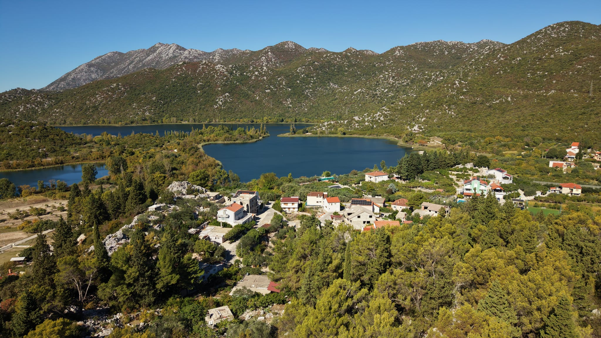

Događanja
Što se događa u našem mistu?
Ovdje napiši novosti i najave događanja iz Peračkog Blata.
Pročitaj više →DOBRO DOŠLI U NAŠE MISTO
Upoznaj ljude, prirodu, događaje i priče koje čine Peračko Blato posebnim.
Upoznaj naše misto →
Ovdje napiši novosti i najave događanja iz Peračkog Blata.
Pročitaj više →Predstavi prirodu, zanimljiva mjesta i fotografije iz našega kraja.
Pogledaj galeriju →Stare fotografije i priče koje čuvaju uspomene na naše misto.
Otkrij priču →Imaš fotografiju, priču ili informaciju koju želiš podijeliti s nama?
Javi nam se →